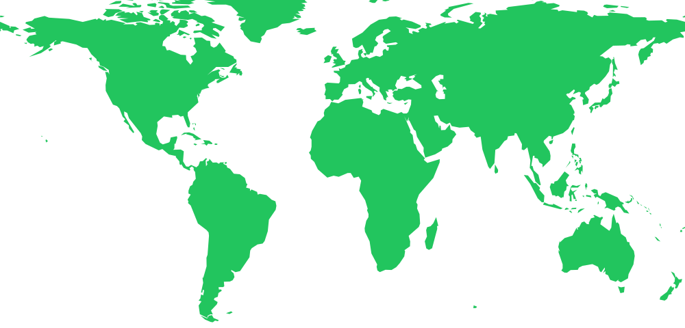

17-year-old Self-Taught Developer | Offensive Security Researcher
"I don't just find bugs. I make systems bleed...
then heal them stronger."
17-year-old self-taught offensive security researcher from the UAE. I break systems, build privacy tools, and hunt vulnerabilities like it's a sport.
I live at the intersection of code and chaos. From web app pentests to breaking LLMs, I turn curiosity into exploits and exploits into hardened defenses.
TryHackMe rank: Active learner. Real-world focus: Responsible disclosure with clean PoCs and clear remediation paths. No theoretical risk reports — every finding has a working proof of concept.
My workflow is simple: identify the attack surface, prove the exploit, report responsibly. I don't just find bugs; I understand the logic behind them.
Currently: Hunting bugs & building privacy tools, auditing web platforms, and deepening AI security research.
Open-source tools and projects. Real software, real impact.
Verified vulnerabilities. Responsible disclosure. Real exploitable bugs with confirmed impact — not theoretical risks.
My security workflow is transparent: passive analysis → JavaScript bundle review → HAR file analysis → browser console verification → responsible disclosure. I prioritize reproducible findings over automated scanner reports.
I openly use AI assistants (Claude and Gemini) to speed up code analysis and attack-surface mapping, while keeping reports evidence-driven and technically verified.
Simulated real-time CVE intelligence feed. Tracking emerging threats across critical infrastructure.
A chronological record of vulnerabilities disclosed, tools built, and milestones reached.
Real numbers from real audits. No fluff.
You're not alone — thousands of proxies are helping censored users worldwide.

Help censored users browse the free internet — right from your browser
Turn this on and Tor's official widget loads below. Once you opt in there, your browser can relay encrypted traffic for someone whose internet is censored — keep the tab open for as long as you can.
Tor deliberately doesn't expose per-proxy connection counts to embedding sites — that's a privacy protection, not a bug. The network-wide totals above are real, published figures.
Your browser becomes a bridge, carrying encrypted Tor traffic the same way a video call carries audio — so it blends in with ordinary web traffic.
You only ever handle encrypted bytes. Neither the sites someone visits nor their real IP is ever exposed to your browser or to this page.
This loads Tor's own, actively maintained Snowflake client — the same one used by thousands of volunteers worldwide. Learn more →
Real push events and contribution history, pulled live from the GitHub API for @COOLXPLO.
Real missions, real exploitation. Ranked #6 on the leaderboard. Every challenge a lesson.
3 hidden challenges across this portfolio — solve them all to earn the Verified Hacker badge
A signal is being broadcast from the terminal. Intercept it and decode the message.
Something is hidden in the source code of this page. Inspect the HTML to find the secret.
An encrypted transmission was intercepted: FRPHEVGL. Decode it using a classic cipher.
Security engagement, collaboration, or just want to talk shop. All communications treated with strict confidentiality.